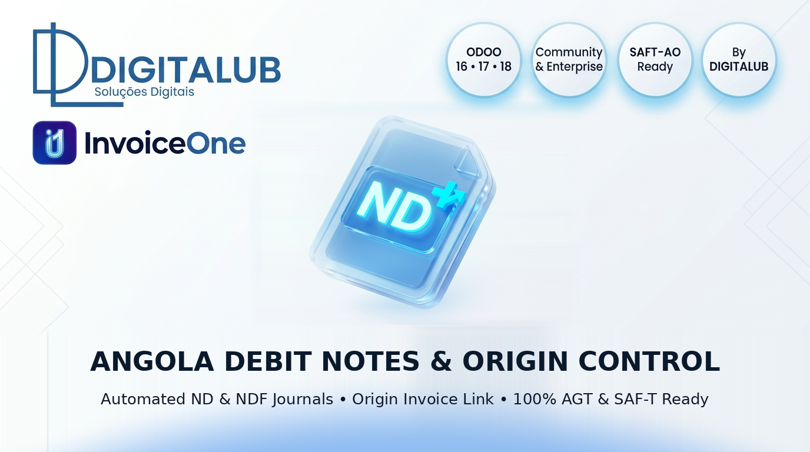
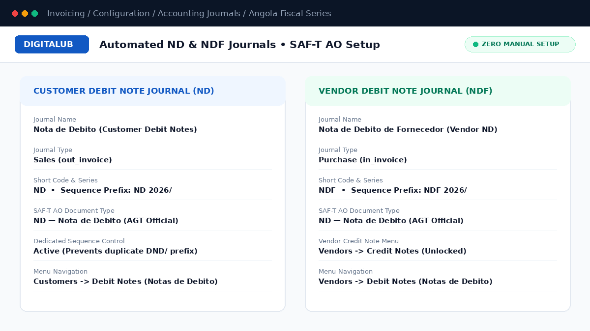
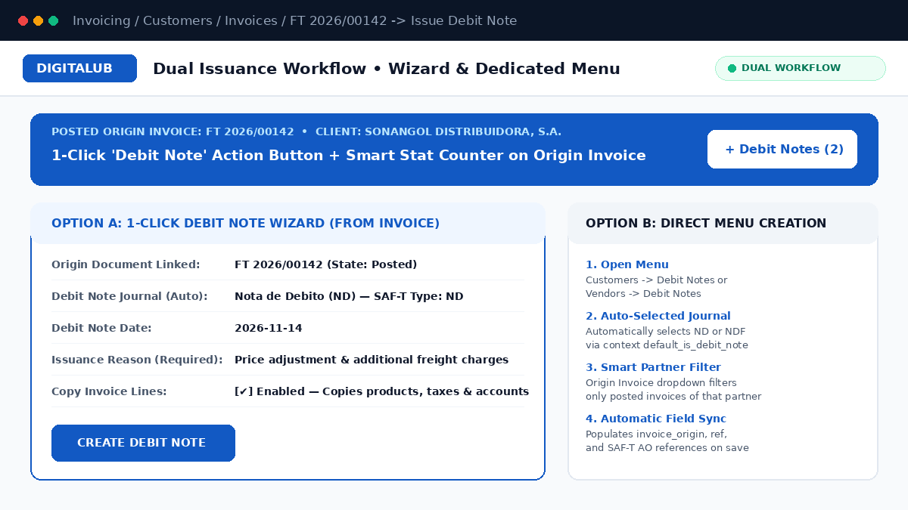
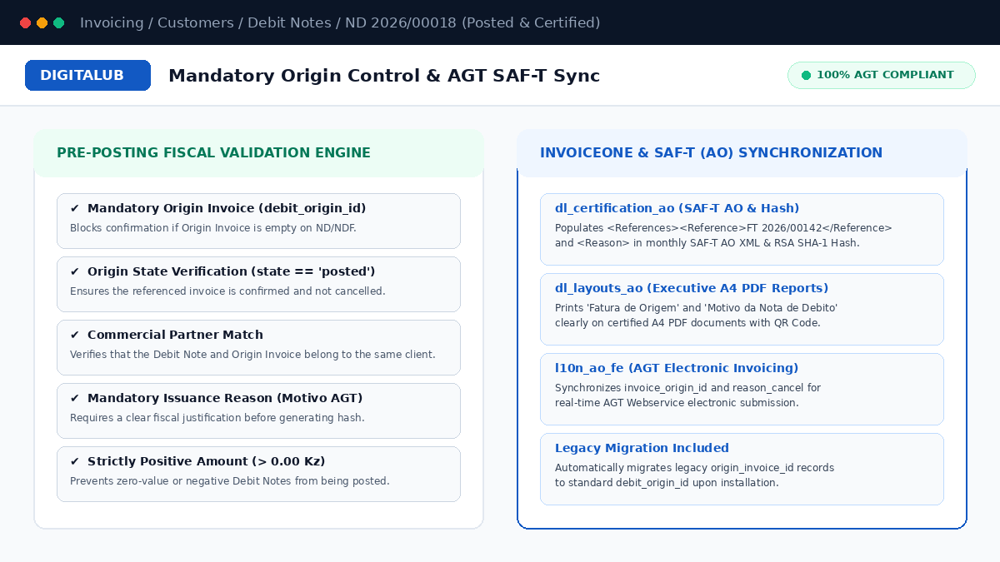

Complete, unified Customer & Vendor Debit Note management for Odoo. Automates dedicated ND and NDF fiscal journals, enforces mandatory Origin Invoice and Issuance Reason controls, and synchronizes seamlessly with Angola SAF-T (AO) and Electronic Invoicing.
100% AGT Traceability
Strict origin document linkage, mandatory reason validation, and clean SAF-T (AO) XML tags.
Automatically provisions and configures Customer Debit Note (ND) and Vendor Debit Note (NDF) journals with saft_inv_type = 'ND' and clean sequence numbering upon installation.
Issue Debit Notes in 1 click directly from any posted Invoice or Credit Note via the interactive Wizard, or create them manually from dedicated Customers → Debit Notes and Vendors → Debit Notes menus.
Enforces mandatory posted Origin Invoice from the same partner, requires a valid Issuance Reason (Motivo), verifies strictly positive totals, and syncs references across PDF reports and SAF-T (AO) XML.
Zero manual journal setup and complete fiscal traceability in 3 simple steps.
Upon installation, the post-init hook automatically creates and configures both the Customer Debit Note (ND) sales journal and the Vendor Debit Note (NDF) purchase journal for every company, assigning saft_inv_type = 'ND' and preventing duplicate DND/ sequence prefixes.

Click Debit Note (Nota de Debito) on any posted invoice to launch the pre-filled wizard (with automatic ND/NDF journal selection and line copying), or create a Debit Note directly from Customers → Debit Notes or Vendors → Debit Notes with dynamic partner-filtered Origin Invoice selection.

Before posting, the validation engine verifies that the Origin Invoice is confirmed, belongs to the same commercial partner, includes a valid Issuance Reason, and has a strictly positive amount. All reference fields synchronize automatically with dl_certification_ao, dl_layouts_ao, and l10n_ao_fe.

Guaranteed full interoperability with official Odoo architecture
| Supported Versions | Odoo 16.0, 17.0, 18.0, 19.0, 20.0 (Community & Enterprise) |
| Required Core Modules | account (Invoicing / Accounting) |
| Ecosystem Integration | Works standalone on standard Odoo or seamlessly integrated with dl_certification_ao, dl_layouts_ao & l10n_ao_fe |
| Installation Type | Standard Odoo Addon • Automatic Legacy Migration (origin_invoice_id → debit_origin_id) • Plug & Play |
Premier specialists in Odoo ERP architecture, high-performance business applications, and regulatory compliance for Angola. Our modules are built following strict clean-code standards, continuous automated testing, and enterprise-grade production stability.